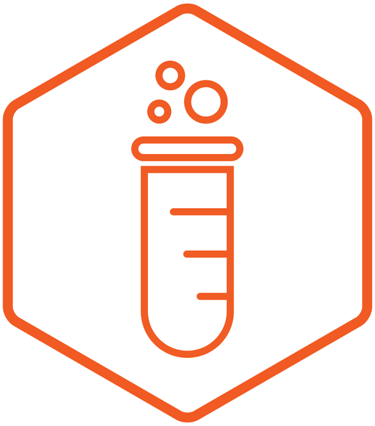

Bubbleized is a collaboration between
Richard Silvester and Giulio Fagiolini at Infogr8 Labs.
Currently in beta version, Bubbleized has been developed for the VISUALIZED.IO event in London, to visually explore and interact with the twitter activity pre, during and post the conference.
Infogr8 Labs is a division of Infogr8
producing visual solutions around innovation.
